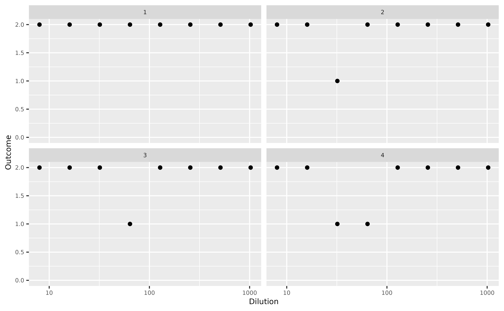
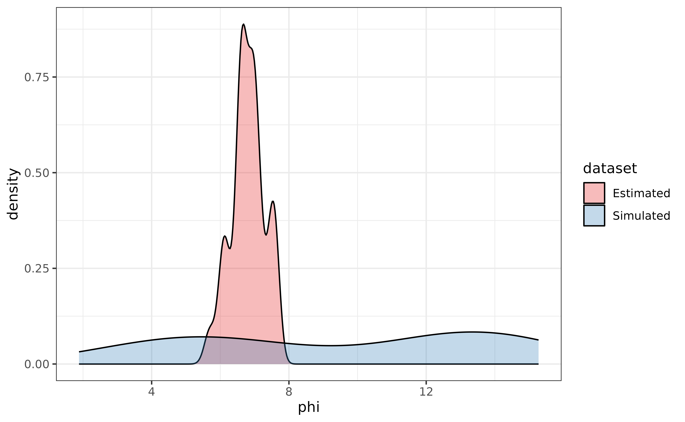
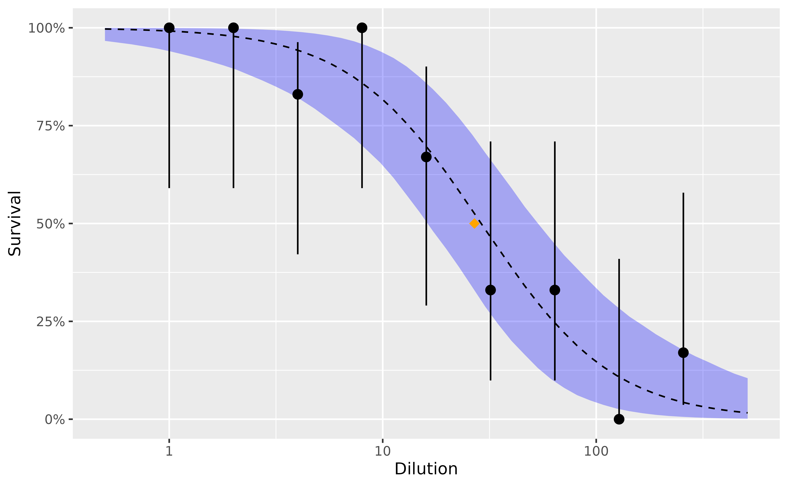
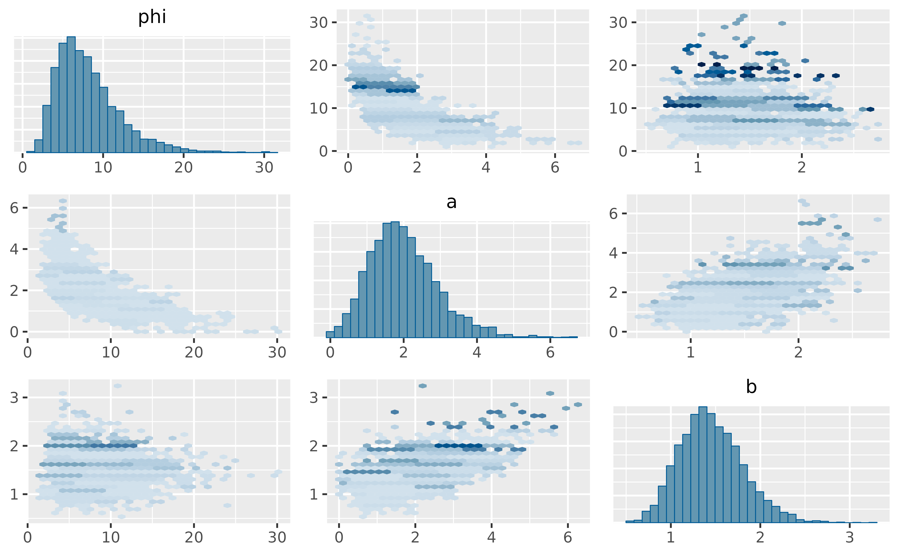
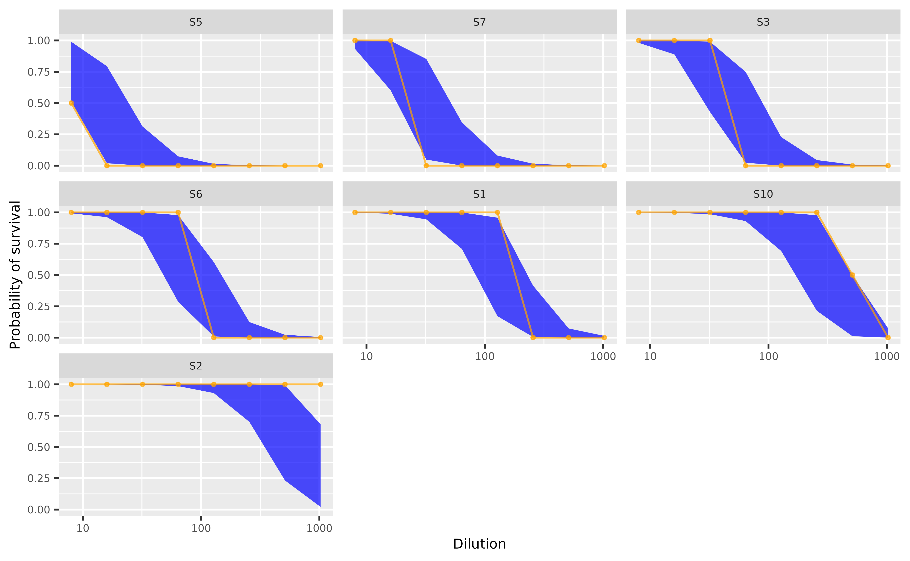

This vignette presents the different ways to use the functions in the bayesianTiterCalc package to summarize virus neutralization assay data to calculate antibody titer (i.e., 50% endpoint of neutralization, (ED50)) and estimate antibody concentration, \(\phi\), in a serum sample. We suppose that for each original (i.e. undiluted) serum, there is a true concentration of antibodies, \(\phi\) > 0, and there exists a dose-response curve which indicates how cells/cell cultures die as a function of antibody concentration. As the original serum is diluted further, there is a lower probability that the cells will survive. We use a modified logistic function to model the dose-response relationship in a mechanistic model: \[\mu(x) = \frac{1}{1 + \exp(-(a + bx))}\] where \(0 ≤ \mu(x) ≤ 1\) indicates the probability of cell survival as a function of the antibody concentration in the serum sample, x, and \(a\) and \(b\) > 0 affect the position and slope of the curve. In the limit x \(\rightarrow\) \(\infty\), the probability that the cell survives, \(\mu\)(x) \(\rightarrow\) 1.
Here, we present examples using three datasets: (i) simulated data, (ii) actual data from a neutralization assay, and (iii) serum titration data as used in the Reed and Muench method for estimating 50% endpoints.
Simulated data
Using the sample_dose_response function, we simulate data for 30 serum samples where each sample is diluted 2-fold in eight dilutions from 1:8 to 1:1024. Each dilution is in four replicates. In this example, it’s assumed the \(\phi\) values are drawn from a uniform distribution with a range (0.75 to 16) and can be described by a logistic function with a \(a\) and \(b\) values as shown. The data must be in long-format - to see how, use the R’s ‘head’ function with the example data below.
ndraws = 30;
a = 1.65
b = 2.65
prior_phi <- list(lower = 0.75, upper = 16)
dilutions <- 2^c(3, 4, 5, 6, 7, 8, 9, 10);
nreplicates_per_dilution = 2
simData <- sample_dose_response(ndraws, prior_phi, a, b, dilutions, nreplicates_per_dilution)The function ‘sample_dose_response’ samples from a uniform distribution {a, b} and calls the ‘simulate_dose_response’ function.
Check if the simulated data is non monotonic using the non_monotonic function. It is expected that mortality of cell cultures increases with higher serum dilutions. Non-monotonic data would show ‘accidental’ death or survival of cell cultures in between dilution levels, i.e., unexpected cell death in low dilutions or survival in high dilutions.
library(dplyr)
non_monotone <- simData %>%
group_by(simData$draw) %>%
summarise(is_non_monotone = non_monotonic(simData$number_surviving))
table(non_monotone$is_non_monotone)In the table output above, ‘0’ and ‘1’ represents monotonic and non-monotonic data points, respectively.
The simulated data can be plotted to show the number or proportion of replicates that have surviving cells (Y axis) per dilution:
library(ggplot2)
options(dplyr.summarise.inform = FALSE)
simData %>%
filter(draw %in% 1:4) %>%
group_by(draw, dilution) %>%
summarise(outcome = number_surviving) %>%
ggplot(aes(x = dilution, y = outcome)) +
geom_point() +
scale_x_log10() +
ylim(0, max(simData$number_surviving)) +
labs(x = 'Dilution', y = 'Outcome') +
theme(axis.title = element_text(size = 8),
axis.text = element_text(size = 6),
strip.text = element_text(size = 6)) +
facet_wrap(~draw)
Fit the mechanistic model to the simulated data. Here we use the Stan’s sampling algorithm, but the optimization algorithm is also available through the ‘optimizing_stan’ function.
stan_data = list(N = nrow(simData),
nreplicates = rep(nreplicates_per_dilution, nrow(simData)),
survival = simData$number_surviving,
dilution = simData$dilution,
nsample = max(simData$draw),
sample = simData$draw,
is_log = 1)
fit <- sampling_stan(standata = stan_data, chains = 4, iter = 1000, init = 'random')
# extract model estimated phi values:
phis <- apply(rstan::extract(fit, "phi")[[1]], 2, mean)
phiEstimated <- data.frame('phi' = phis, 'dataset' = rep('Estimated', length(phis)))
# phi values in the simulated data:
phiVals <- (simData[!duplicated(simData[,c('draw')]),'phiValue'])$phiValue
phiSimulated <- data.frame('phi' = phiVals, 'dataset' = rep('Simulated', length(phiVals)))
# Compare phi values - in the simulated ('actual') data and estimated by the model:
phiDF <- rbind(phiEstimated, phiSimulated)
ggplot(phiDF, aes(phi, fill = dataset)) +
geom_density(alpha = 0.3) +
scale_fill_brewer(palette = 'Set1') +
labs(x = 'phi', y = 'density') +
theme_bw()
# extract posterior predictive quantities:
survival_sim <- rstan::extract(fit, "survival_sim")[[1]]
outcome_sim <- apply(survival_sim, 2, function(x) quantile(x, 0.5))
prob <- apply(rstan::extract(fit, "prob")[[1]], 2, median)
prob_low <- apply(rstan::extract(fit, "prob")[[1]], 2, function(x) quantile(x, 0.25))
prob_high <- apply(rstan::extract(fit, "prob")[[1]], 2, function(x) quantile(x, 0.75))Reed and Muench serum titration data
delayedAssign('df', reedmuenchTitrations)
df <- df %>%
rename_all(tolower) %>%
mutate(sample = 1,
nreplicates = alive + dead,
survival = survival / 100,
type = "real",
lower = qbeta(0.025, 1 + alive, 1 + nreplicates - alive),
upper = qbeta(0.975, 1 + alive, 1 + nreplicates - alive))
# simulated dilutions
lower <- log10(min(df$dilution) / 2)
upper <- log10(max(df$dilution) * 2)
ndilutionssim <- 50
dilutionssim <- 10^seq(lower, upper, length.out = ndilutionssim)
# Prepare data for model fitting
stan_data <- list(
N = nrow(df),
nreplicates = df$nreplicates,
survival = df$alive,
dilution = df$dilution,
nsample = max(df$sample),
sample = df$sample,
is_log = 1,
ndilutionssim = ndilutionssim,
dilutionssim = dilutionssim
)Model fitting using Stan’s sampling algorithm.
fit <- sampling_rm(standata=stan_data, iter=2000, chains=4, init = 'random')Examine model output:
print(fit, "ed50")
#> Inference for Stan model: modelwithppc_reedmuench.
#> 4 chains, each with iter=2000; warmup=1000; thin=1;
#> post-warmup draws per chain=1000, total post-warmup draws=4000.
#>
#> mean se_mean sd 2.5% 25% 50% 75% 97.5% n_eff Rhat
#> ed50 30.57 0.16 9.86 16.09 23.89 29.02 35.34 54.39 4018 1
#>
#> Samples were drawn using NUTS(diag_e) at Mon Nov 7 15:23:31 2022.
#> For each parameter, n_eff is a crude measure of effective sample size,
#> and Rhat is the potential scale reduction factor on split chains (at
#> convergence, Rhat=1).
print(fit, "phi")
#> Inference for Stan model: modelwithppc_reedmuench.
#> 4 chains, each with iter=2000; warmup=1000; thin=1;
#> post-warmup draws per chain=1000, total post-warmup draws=4000.
#>
#> mean se_mean sd 2.5% 25% 50% 75% 97.5% n_eff Rhat
#> phi 8.44 0.14 4.35 2.79 5.31 7.53 10.63 19.22 917 1
#>
#> Samples were drawn using NUTS(diag_e) at Mon Nov 7 15:23:31 2022.
#> For each parameter, n_eff is a crude measure of effective sample size,
#> and Rhat is the potential scale reduction factor on split chains (at
#> convergence, Rhat=1).
probs <- rstan::extract(fit, "prob_survive")[[1]]
lower <- apply(probs, 2, function(x) quantile(x, 0.025))
upper <- apply(probs, 2, function(x) quantile(x, 0.975))
middle <- apply(probs, 2, function(x) quantile(x, 0.5))
df_both <- tibble(lower=lower, survival=middle, upper=upper, type="simulated", dilution=dilutionssim) %>%
bind_rows(df)
# plot
ggplot(data=filter(df_both, type=="real"), aes(x=dilution, y=survival)) +
geom_ribbon(data=filter(df_both, type=="simulated"), aes(ymin=lower, ymax=upper), fill="blue", alpha=0.3) +
geom_line(data=filter(df_both, type=="simulated"), colour="black", linetype=2) +
geom_pointrange(aes(ymin=lower, ymax=upper)) +
geom_point(data=tibble(dilution=26.9, survival=0.5), colour="orange", shape=18, size=3) +
labs(x = "Dilution", y = "Survival") +
scale_y_continuous(labels=scales::percent) +
scale_x_log10()
params <- rstan::extract(fit, c("phi", "a", "b")) %>% as.data.frame()
Real virus neutralization assay data
In the following example we show the use of the package with actual serum neutralization data. The data is similar to the simulated data above, i.e., 2-fold serum dilutions of 1:8 to 1:1024, where each dilution was tested in duplicate.
delayedAssign('df', evTitrations)
df <- df %>% mutate(sample=as.numeric(as.factor(sampleID)))
table(df$outcome)
non_monotone <- df %>%
group_by(sample) %>%
summarise(is_non_monotone=non_monotonic(outcome))
table(non_monotone$is_non_monotone)Visualize the data to show the number or proportion of replicates that have surviving cells (Y axis) per dilution:
df %>%
filter(sample %in% 1:4) %>%
group_by(sample, dilutions) %>%
summarise(outcome=mean(outcome) / 2) %>%
ggplot(aes(x=dilutions, y=outcome)) +
geom_point() +
scale_x_log10() +
labs(x = 'Dilutions', y = 'Outcome') +
theme(axis.title = element_text(size = 10),
axis.text = element_text(size = 8),
strip.text = element_text(size = 8)) +
facet_wrap(~sample)Fit model to data using the sampling algorithm:
stan_data <- list(
N = nrow(df),
nreplicates=rep(2, nrow(df)),
survival=df$outcome,
dilution=df$dilutions,
nsample=max(df$sample),
sample=df$sample,
is_log=1
)
fit <- sampling_stan(standata = stan_data, chains=4, iter = 1000, init = 'random')Examine the model estimates - \(\phi\) and ED50 - and compare with antibody titer calculated with the Reed and Muench method. ED50 is a model generated quantity of the endpoint dilution at 50% mortality, calculated as: \[ed50 = \phi * \exp(-a) ^ {-1 / b}\]
phiEstimated <- apply(rstan::extract(fit, "phi")[[1]], 2, mean)
ed50Estimated <- apply(rstan::extract(fit, "ed50")[[1]], 2, mean)
phis_ed50_titers <- df
for(i in 1:nrow(phis_ed50_titers)){
phis_ed50_titers[i, 'phi'] <- phiEstimated[phis_ed50_titers$sample[i]];
phis_ed50_titers[i, 'ed50'] <- ed50Estimated[phis_ed50_titers$sample[i]]
}
plot(log10(phis_ed50_titers$titer), phis_ed50_titers$phi,
main="Titer vs. phi", ylab="phi", xlab="log10 Titer", pch=19)
plot(log10(phis_ed50_titers$titer), phis_ed50_titers$ed50,
main="Titer vs. ED50", ylab="ED50", xlab="log10 Titer", pch=19)
plot(phis_ed50_titers$phi, phis_ed50_titers$ed50,
main="phi vs. ED50", ylab="ED50", xlab="phi", pch=19)
Extract posterior predictive simulations:
survival_sim <- rstan::extract(fit, "survival_sim")[[1]]
outcome_sim <- apply(survival_sim, 2, function(x) quantile(x, 0.5))
prob <- apply(rstan::extract(fit, "prob")[[1]], 2, median)
prob_low <- apply(rstan::extract(fit, "prob")[[1]], 2, function(x) quantile(x, 0.025))
prob_high <- apply(rstan::extract(fit, "prob")[[1]], 2, function(x) quantile(x, 0.975))
df <- df %>%
mutate(outcome_sim = outcome_sim, prob = prob, prob_low = prob_low, prob_high = prob_high)
df_long <- df %>%
select(sampleID, dilutions, outcome, outcome_sim, prob, prob_low, prob_high) %>%
rename(actual = outcome, simulated = outcome_sim) %>%
mutate(fraction = actual / 2)
bars <- df_long %>%
group_by(sampleID) %>%
summarise(barcode = paste0(actual, collapse = "")) %>%
ungroup() %>%
pull(barcode) %>%
unique()
bars_lookup <- df_long %>%
group_by(sampleID) %>%
summarise(barcode = paste0(actual, collapse = ""))
df_long <- df_long %>% left_join(bars_lookup)
df_each_code <- df_long %>%
group_by(barcode) %>%
summarise(sampleID = first(sampleID)) %>%
mutate(keep = TRUE)
df_short <- df_long %>%
left_join(df_each_code) %>%
filter(keep == TRUE)
Plot the probability of cells surviving per serum dilution point:
library(tidyverse)
tmp <- df_short %>%
group_by(sampleID) %>%
summarise(first_non_total = which(actual < 2)[1]) %>%
mutate(first_non_total = ifelse(is.na(first_non_total),
max(first_non_total, na.rm = T) + 1,
first_non_total))
df_short %>%
left_join(tmp) %>%
mutate(sampleID = as.factor(sampleID)) %>%
mutate(sampleID = fct_reorder(sampleID, first_non_total)) %>%
ggplot(aes(x = dilutions, y = prob)) +
geom_ribbon(aes(ymin = prob_low, ymax = prob_high), alpha = 0.7, fill = "blue") +
geom_point(aes(y = fraction), size = 0.8, alpha = 0.7, colour = "orange") +
geom_line(aes(y = fraction), alpha = 0.7, colour = "orange") +
scale_color_brewer("Type", palette = "Dark2") +
scale_x_log10() +
labs(y = "Probability of survival", x = "Dilution") +
theme(axis.title = element_text(size=8),
axis.text = element_text(size=6),
strip.text = element_text(size=6)) +
facet_wrap(~sampleID)